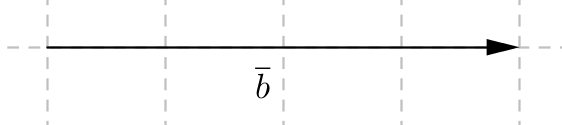

<article>
    <section>
        <header>Osa 1
        </header>
<ol>
            <li>
                Vektori on matemaattinen malli, jolla on sek‰ suuruus (pituus) ett‰ suunta. Vektori nimet‰‰n usein joko p‰‰tepisteiden avulla, esim. $\overline{AB}$ tai pienell‰ kirjaimella, esim. $\overline{a}$. Ohessa on erilaisia vektoreita. Vertaa jokaista vektoria vektoriin $\overline{a}$. \\
                <ol>
                    <li>Palauta mieleen, mit‰ tarkoitti k‰site yhdensuuntaisuus (MAA3 ja MAA4). Mitk‰ vektoreista ovat yhdensuuntaisia vektorin $\overline{a}$ kanssa?</li>
                    <li>Samansuuntaiset vektorit kulkevat samaan suuntaan, se on siis tiukempi vaatimus kuin yhdensuuntaisuus. Mitk‰ vektoreista ovat samansuuntaisia vektorin $\overline{a}$ kanssa?</li>
                    <li>Mitk‰ vektoreista ovat vastakkaissuuntaisia vektorin $\overline{a}$ kanssa?</li>
                    <li>Mitk‰ vektoreista ovat erisuuntaisia vektorin $\overline{a}$ kanssa?</li>
                    <li>Vektorit ovat samat silloin, kun niill‰ on samat ominaisuudet. Toisin sanoen niiden tulee olla yht‰ pitk‰t ja samansuuntaiset. Mitk‰ vektoreista ovat samoja kuin vektori $\overline{a}$?</li>
                    <li>Mit‰ voisi tarkoittaa vastavektori? Mitk‰ vektoreista ovat vektorin $\overline{a}$ vastavektoreita?</li>
                    <li>Tarkista p‰‰ttelysi oikeellisuus lukemalla kirjasta s. 9. Merkitse jokaiseen kohtaan a)-f) vektoreiden suuntaa kuvaava tieto merkintˆjen avulla, jotka esitell‰‰n samalla sivulla.</li>
                </ol>
                
            </li>
            <li>
                Nollavektori on sellainen, joka alkaa ja p‰‰ttyy samaan pisteeseen. Sill‰ ei ole suuntaa ja sen pituus on nolla. Nollavektoria merkit‰‰n $\overline{0}$. Jos joskus teht‰v‰ss‰ p‰‰dyt‰‰n tilanteeseen $\overline{AA}$, niin t‰llˆin tiedet‰‰n, ett‰ kyseess‰ on nollavektori $\overline{0}$. Vektorin $\overline{b}$ yksikkˆvektori on samansuuntainen vektori kuin $\overline{b}$, mutta sen pituus on yksi. Yksikkˆvektoria merkit‰‰n $\overline{b}^0$. Piirr‰ vektorin $\overline{b}$ yksikkˆvektori.

                 
            </li>
            <li>
                Harjoittele lis‰‰ tekem‰ll‰ teht‰v‰t 1,2, 3 ja 5.
            </li>
            <li>
                Vektoreiden v‰linen kulma muodostuu, kun vektorit asetetaan alkamaan samasta pisteest‰. Vektoreiden v‰linen kulma on kuvaan muodostuvista kulmista pienempi, eli $0^{\circ}\leq \angle{(\overline{a},\overline{b})}\leq 180^{\circ}$. Harjoittele tekem‰ll‰ teht‰v‰t 8 ja 17 kirjasta.

                Seuraavaksi  on vuorossa vektoreiden peruslaskutoimitukset, eli yhteen ja v‰hennyslasku sek‰ vektorin kertominen luvulla. N‰it‰ taitoja harjoiteltiin jo laivanupotuksessa.</li>

            <li>
                Summa- ja erotusvektorit saadaan seuraavasti. Muodosta ensin tarvittavat vektorit: tulkitse v‰hennyslasku summaksi, jossa lis‰tt‰v‰n‰ on v‰hennett‰v‰n vastavektori. T‰m‰n j‰lkeen muodosta reitti niin, ett‰ seuraava vektori alkaa aina siit‰, mihin edellinen p‰‰ttyy. Summa- ja erotusvektori saadaan yhdist‰m‰ll‰ reitin alku- ja p‰‰tepiste. Harjoittele laskutoimitusten tekemist‰ piirt‰m‰ll‰ tekem‰ll‰ teht‰v‰t  19 ja 20.\\
            </li>
            <li>
                Harjoittele lis‰‰ tekem‰ll‰ teht‰v‰t 23 ja 34.</li>

            <li>
                Vektoreita voi laskea yhteen ja v‰hent‰‰ sek‰ kertoa luvulla, kuten polynomeja, toisin sanoen samoja vektoreita voi yhdist‰‰ ja luvun voi kertoa vektoreiden summan tai erotuksen sis‰‰n. Esimerkiksi $\overline{a}-(2\overline{a}-\overline{b})=\overline{a}-2\overline{a}+\overline{b}=-\overline{a}+\overline{b}$. Piirr‰ jotkin erisuuntaiset vektorit $\overline{a}$ ja $\overline{b}$. Piirr‰ ensin kuva alkutilanteesta, eli yht‰suuruusmerkin vasenta puolta esitt‰v‰ tilanne. Piirr‰ viereen kuva lopputilanteesta, eli yht‰suuruusmerkin oikeaa puolta esitt‰v‰ tilanne. Jos homma meni niin kuin piti, niin lopullisten vektoreiden pit‰isi n‰ytt‰‰ samalta. </li>

            <li>
                Harjoittele tekem‰ll‰ teht‰v‰t 21 ja 35.</li>

            <li>
                Lue kirjasta esimerkki s. 20 ja tee teht‰v‰t 27 ja 29.</li>

        </ol>
        <p>Tee teht‰v‰t numeroj‰rjestyksess‰. Pid‰ huolta, ett‰ ymm‰rr‰t, miksi teet mit‰ teet.</p>

        <p>Kun tarkistat teht‰vi‰, k‰yt‰ seuraavia koodauksia: jos teht‰v‰ meni ensimm‰isell‰ kerralla oikein, ympyrˆi teht‰v‰numero vihre‰ll‰ tmv. tavalla, jonka erotat. Jos teht‰v‰ ei mennyt ensimm‰isell‰ oikein, j‰t‰ yritys n‰kyviin, ‰l‰ kumita sit‰ pois. Etsi, miss‰ virhe tapahtui ja alleviivaa se. Selit‰ viereen omaan tyyliisi, mik‰ tai miksi teht‰v‰ ei mennyt niin kuin piti. Tee teht‰v‰ uudelleen ja ympyrˆi teht‰v‰numero keltaisella v‰rill‰ tmv. Jos teht‰v‰ j‰‰ kokonaan tekem‰tt‰ avusta huolimatta, merkitse se itsellesi ylˆs punaisella.
        </p>
        <p>Ahkeraa tyˆskentely‰!</p>

        
    </section>
</article>
